iPod nano ゲット！
ライブドアデパートからお届け物ということで不在票が来ていました。
心当たりがないので何かの間違いじゃないかと思って宅急便に電話しました
「買い物した覚えはないんですけど、xxx号室で合っていますか？」
「プレゼントと書いてありますねー。後ほど伺いますのでとりあえずご確認いただけますか？」
とのこと。
さて、何かと思えば・・・
iPod nano！！！
忘れていましたが、ライブドアの３周年企画とかで応募していたものでした。
さて、iPod といえば以前も会社のネーミングコンテストの賞品でもらったり、「がんばったで賞」で貰ったりと貰ってばかりです。
たぶん、貰ったのは iPod 4G、iPod nano 1G、iPod mini、iPod nano 2G で４つ目。
自分で買ったのは iPod 1G、iPod 3G、iPod 5G。
手元にある iPod 達
青いアルミケースはカッコいいんですが、1世代目のiPod nano とそんな機能は変わらないですよね？
オークション？
追筆(2/2)：
引き取り手が見つかりました。
関連エントリ：
・スニッカーズ USB メモリ当選♪
・BEAが業界発の先手必勝サポートサービス "Guardian Support Service" を発表
フラッコくん と フラット３５
フラット３５は３５年間固定金利の住宅ローンです。
どんな仕組みで、どんなメリットがあるのかラッコの「フラッコ君」が説明してくれるムービーがあります。
・フラッコくんが答える【フラット３５】ってなあに？
http://www.flat35.com/dj/index.html
尺の割にはあまり情報量がないのですが、突然狂いだしたように貝殻を叩くフラッコ君が愛らしくてたまりません（？）
緑地 ≠ 公園
ひょんなことから知ったのですが、法律用語では緑地とは必ずしも植物が生えている土地のことを指すわけではないそうです。
緑地と聞くと公園や雑木林といったものを指す物と思っていました。
・Wikipedia 緑地より
へぇ〜。
結構常識なんでしょうか？
DOA - Dead or Alive
を観た。
・デッド オア アライブ 公式サイト
http://www.doa-movie.jp/
TECMO の同名格闘ゲームをベースにしたハリウッド映画。2月10日公開。
申し込んだのすら忘れていたんですが、試写会のチケットが届いたので観に行きました。
ケイン・コスギのハリウッドデビュー作に当たるみたいです。
IMDBでは主要キャストの中で、一番最後に記載されているのでチョイ役かと思っていました。
が、しかし、冒頭で殺されてしまうようなこともなくしっかりストーリーに絡んでいました。
Sin CITYのデヴォン青木というヒロインがなかなかカワイイです。
現代に生き延びる忍びの一族の末裔？みたいな設定だけどもケイン・コスギと共に平気で英語をペラペラしゃべっていて一言も日本語を発しません。
史実ベースとゲームベースということで大きな違いがありますが、ジャンヌ・ダルクを観るフランス人もこんな気持でしょうか？
#あ、フランス人は字幕じゃなくて吹き替えで観る？
内容は結構単純明快。DOA という選ばれた者だけが出場できる格闘技の世界大会に出場者それぞれの目的を持って優勝を目指すけど、実は陰謀があって・・みたいなストーリー。
ゲームは全然やったことがなくて、思い入れも予備知識も全くない状態で観ましたが、良い意味でメチャクチャなアクションやハデなシーンがあって楽しませてくれました。
きっとゲーム内のストーリー、ステージとシンクロする部分があってファンをニヤリとさせる演出があるんだろうけど、そういうのが分からなくても単純に楽しめます。
「"チャーリーズ・エンジェル"よりセクシーで、"Hero"より過酷な戦い」というキャッチはなかなか言い得ていて、それぞれの美味しいところを足して 3.1415926535 で割った感じです。
Jetty Hightide 6.1.0 beta リリース
軽量サーブレットコンテナ Jetty ベースの Hightide という製品がWebTide よりリリースされました。
・Hightide download
Jetty をベースに著名な AJAX ライブラリと JTA/JDBC/JMS など J2EE の主要なコンポーネントを集めたものみたいです。
アーカイブは22MBほどあって、サイズの意味での"軽量"からはちょっと遠のいていますが、最近 Jetty で遊んでいるので興味深いです。
・AJAX Jetty Whitepaper
・Why AJAX Comet? Whitepaper
BEA Security Advisories
セキュリティ脆弱性についてのリストがかなり大量に更新されています。
・dev2dev > Advisories and Notifications
なんでもかんでもパッチをあてないといけないわけではなく、構成によってパッチ適用/設定変更の要不要が決まってくるので説明をよく見て考える必要があります。
非公式だけどやたらと詳しい解説はこちらでしてくれるものと期待しています。
ポテトパラダイスへGo!
前々から目を付けていたポテトパラダイスへ行ってきました。
ポテトパラダイスはファーストキッチン系列のフライドポテト専門店です。
フライドポテトといえば日本ではハンバーガー屋さんで食べることが多いですが、揚げたてを食べられるかどうかは運次第！
でもポテトパラダイスではポテトの形、味付けを選ぶとその場で揚げてくれます。
ホクホクサクサクの美味しいフライドポテトがいつでも確実に食べられるのは素晴らしいですね！
揚げたてでザクザク美味しい！
お値段はレギュラーサイズが300円、大盛りが400円。
昔から妻は「フライドポテトをソフトクリームに付けて食べると栗の味がする！大発明」と叫んでいましたが、ファーストキッチンもその味に目を付けていたのでしょうか。
チョコレートコーティングされたフライドポテトをソフトクリームにディップして食べる変わり種のメニューもあります。
TOEIC第128回公開テスト 受検
11月に引き続き TOEIC第128回公開テスト の受検をしてきました。
->結果はこちら
「次回までにはちゃんと勉強するぞ！」と意気込んで申し込んであったものの、結局ほとんど勉強していませんでした。
ちょっとだけ眺めたのはこちらの本。
我ながら呆れただらけようです。
しかし前回は思わず高得点だったので、今回は前回の記録を下回るプレッシャーが。
結果はまぁまぁ。時間はまたギリギリで1分半ほど残った程度。
悪くても前回より大幅に下回ることはなさそうな予感。
リスニングはちょっと集中力が切れてボヤっとして聞き逃しそうになったのが1,2問、普通に聞いてたけれどもあやふやなのが2,3問ありました。
リーディングは前回よりちょっと手応えがある印象。
答えを導き出すのに文章の複数の箇所の情報を総合しないとわからない問題がありました。
例えば
・６月は繁忙期なので料金が12%増
・ウィンドサーフィンの試合は６月開催
という情報が結構離れた所に記載されていて、
・ウィンドサーフィンの試合を観覧する人は12%増の料金を支払わないといけない
という回答を選ぶ問題。
日本語で書かれていてもちょっと考えてしまいますね。
ちゃんと勉強していませんでしたが、２時間英語に集中しただけでも自分のためになった気がします。
今度こそ勉強・・・はあまり続かないので映画を頻繁に観るようにしたいと思います。
ちなみに前回注意された写真ですが、今回は免許証のスキャンじゃなく、ちゃんと自前で撮ってプリントしたもので問題なくパスしました。
安上がりに済んで良かったです。
妻は微妙にサイズが規定よりも小さいということで注意されたようです。うーん、厳しい。サイズ測らずなんとなく切っているのがいけないんですが。
次回は3月25日開催で2月15日申し込み締めきり。
mylo レビュー - その3 外観フォトレビュー
・その1 付属品一覧
・その2 ヘッドセットプラグは携帯平型コネクタ互換！？
・その3 外観フォトレビュー
左側面。無線と電源のインジケータ
上から。ヘッドセットプラグとUSBプラグ
青いところは無線が繋がっているとゆっくり明滅します。
スリープ中の MacBook に似た感じ。
下から。曲送り/戻し・再生・停止ができるレバー
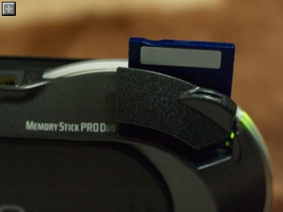
左背面に位置するメモリースティックDuo スロット
押すと入って、また押すと出てくるスプリングロード式になっています。
挿入する向きはPSPとは逆で本体表向きにメモリの表を向けるようになっている。
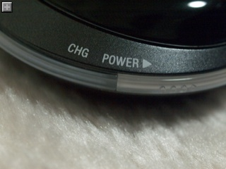
充電、電源インジケータをアップで
本体の丸みに沿ってスイッチをちょっとスライドさせると・・・
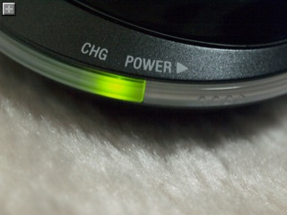
スイッチON！
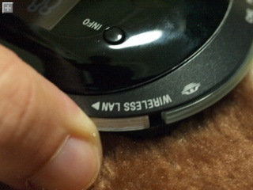
無線接続するときもスライドして・・
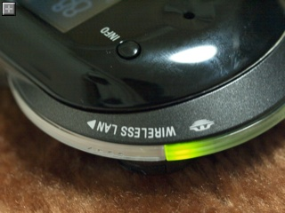
接続！
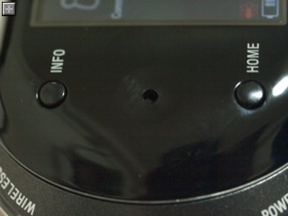
各種プロパティを表示する INFO ボタンと、ホーム画面に戻る HOME ボタン
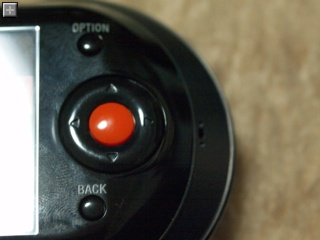
OPTION、BACK ボタンと、カーソルと決定ボタン
カーソルはホイールにはなっていません。
QWERTY 配列のキーボード
数字を打ち込むときは左上の Num ロックで。
キーボードアップ。各ボタンは1mmほど盛り上がっていて、軽いクリック感がある。
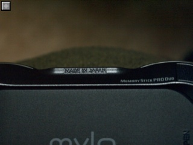
MADE IN JAPAN
米SONY が先導して開発した製品だと聞きましたが、製造は日本で行われているようです。
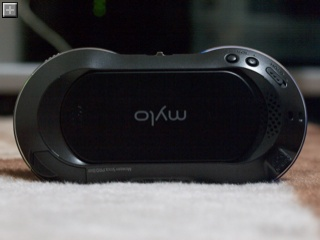
背面全体
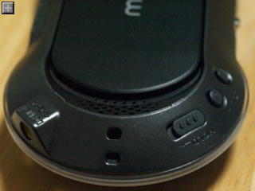
ストラップホール、ボリュームコントロールボタン、HOLDスライドスイッチ
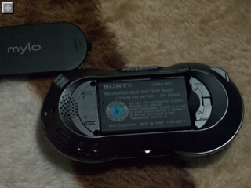
背面カバーを外すと電池
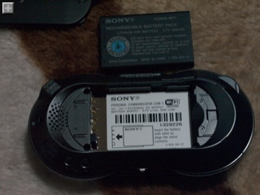
WiFi しかサポートしていないので SIM カードスロットとかはありません
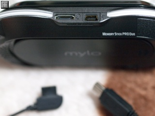
コネクタ部アップ
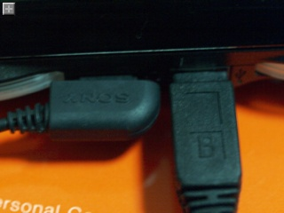
ヘッドセットアダプタ、USB ケーブルを挿したところ
mylo日本版は現在 Sony Style で販売中(お届けは２月以降)です。
楽天市場: Sony Style - パーソナルコミュニケーター“mylo”
mylo レビュー - その2 ヘッドセットプラグは携帯平型コネクタ互換！？
・その1 付属品一覧
・その2 ヘッドセットプラグは携帯平型コネクタ互換！？
・その3 外観フォトレビュー
mylo には一般的な 3.5mmステレオミニジャックは本体にはありません。
ヘッドセットアダプタにマイクと通話ボタン、3.5mmDINプラグがあるのでそこに挿して使うことになります。
ヘッドセットアダプタは独自規格かと最初思いましたが、なんだか見たことがある形です。
ヘッドセットアダプタのプラグ形状、携帯の平型プラグと似てる・・
そう、携帯電話のハンズフリー機器を挿す平型プラグに似ています。
試しに携帯に挿してみたら難なく通話できました
ヘッドフォンが好みの物を使えるのはもちろんですが、携帯電話用のハンズフリー機器や Bluetooth ヘッドセット（平型プラグ受信機付属のもの)などが使えることになりますね。
mylo日本版は現在 Sony Style で販売中(お届けは２月以降)です。
楽天市場: Sony Style - パーソナルコミュニケーター“mylo”
mylo レビュー - その1 付属品一覧
・その1 付属品一覧
・その2 ヘッドセットプラグは携帯平型コネクタ互換！？
・その3 外観フォトレビュー
mylo は Skype や Yahoo、 Google Talk などのチャット、Web ブラウズをPC なしに無線LAN 経由で利用できる携帯情報端末です。
日本版はまだ発売されていないので、もちろん英語版。
ちょっとずつ触りながらレビューしてみたいと思います。
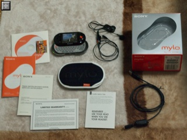
付属品
mylo 本体から時計回りにイヤホン/ヘッドセットアダプタ、パッケージ、USB接続ケーブル、ヘッドセット利用の注意書き、保証書、製品注意書き、マニュアル、ソフトウェアCDROM、中心にあるのがソフトケース。
ヘッドセットを使うときは頭を使え！
日本版ではもう少し別の表現になっているでしょうね・・・。
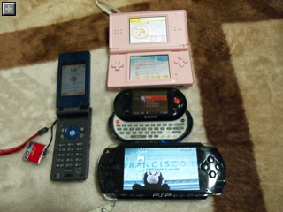
携帯、DS Lite、PSP との大きさ比較
液晶の大きさは2.4インチくらい。解像度は320x240pixels。
キーボードを隠した状態では携帯より一回り大きい程度。
フルキーボードを装備した携帯情報端末としてはなかなか小振りな方ではないでしょうか。
mylo 日本版は現在 Sony Style で販売中(お届けは２月以降)です。
楽天市場: Sony Style - パーソナルコミュニケーター“mylo”
七草がゆ
今日は七草粥を頂きました。
実家ではいつも夕食に食べていまいしたが、本来は朝に頂くものなんですね。
セリ、ナズナ、ゴギョウ、ハコベラ、ホトケリザ、スズナ、スズシロの七草を入れて、無病息災を願う習慣は平安時代からあるそうです。
・タイガー魔法瓶 > 素敵暮らしの達人 > 春の七草がゆをつくる
チーズフォンデュ
今日は久しぶりにチーズフォンデュを食べました。
奥さんの友達がもってきてくれたおいしいバゲットと、エメンタールチーズで大変美味しく頂きました。
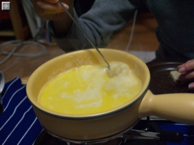
簡単に美味しく、そして楽しく食べられるフォンデュは大好物です。
リッジレーサー７クリア
チコチコと遊んでましたが、リッジレーサー７のメインであるグランプリ14戦全戦をクリアしました。
今のとこプレステ３で持っているゲームはこれだけですがなかなか楽しめてます。
ゲーム内容はPSPのリッジレーサーズと似ていて、何故かドリフトをすると溜まって、消費すると一気に加速できるニトロシステムがあります。
それから新しいのは後方車の最高速度が上がるスリップストリーム。
車の真後ろに付くほど加速しやすくなるので、邪魔をしてやろうとしっかりブロックするとライバルが一気に加速して抜かれてしまうかも、という良い具合のジレンマを生み出してくれます。
アクセルを踏んでいればそう簡単にはスリップしない強固なグリップと、危ない！と思ったらドリフトすればなんとなくコースの通りに走ってくれる、リアルさよりも爽快さを重視した車の挙動は健在。
普通前後輪ともグリグリ滑るのようなドリフトしていたら曲がれるコーナーも曲がれないと思いますが、やはりリッジレーサーはドリフトした者勝ちです。
ゲームの難易度はグッと高く、普通にノーミスで走っていても勝てないレースが平気であります。コーナリングやスリップストリーム、ニトロ発動のタイミングなどうまくやらないと全然勝てません。
画面はさすがにプレイステーション３なだけあってメチャメチャキレイ！
リアル、というよりも「イカニモCG」的なキレイさを追究しているのかもしれません。
写実感でいうと無料でダウンロードして遊べるグランツーリスモHDの方がよりリアルです。
あと、オンラインで対戦できるのは嬉しい誤算でした。さすがにコンピュータ相手と違って手に汗握る勝負が楽しめます。
見知らぬ人々はとても上手で全く相手になりませんが・・。
友達のIDを登録しておくとオン・オフライン状況がわかり、その場で対戦を誘って勝負する、といったことが気軽にできるようになっています。
ネットゲーム特有のタイムラグもうまく気にならないようにできていて、車がワープしてしまったり、あらぬ方向へ走り続けてしまったりということもありません。
当たり判定もうまい具合にごまかして自然に感じられます。
ちょっと残念なのはリッジレーサーの「いつもの」曲とコースが選べないこと。
「いつものコース」はグランプリ全戦クリアで選択できるようになりましたが、曲は出てきません。
もう少しゲームを進めると出てくるんでしょうか？

{kind=link}
{kind=link}
{kind=link}
{kind=link}
{kind=link}
{kind=link}
{kind=link}
{kind=link}
{kind=link}
{kind=link}
{kind=link}
{kind=link}
{kind=link}
{kind=link}
{kind=link}
{kind=link}
{kind=link}
{kind=link}
{kind=link}
{kind=link}
{kind=link}
{kind=link}
{kind=link}
{kind=link}
{kind=link}
{kind=link}
{kind=link}
{kind=link}